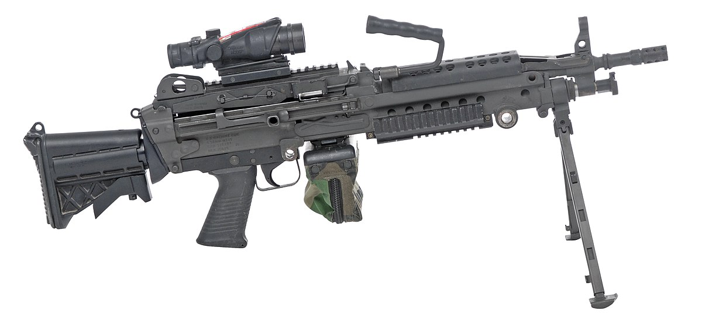

El material bélico se refiere a todos los equipos, herramientas, armas,
municiones y demás recursos utilizados en actividades militares o de guerra.
armas de fuego, armas blancas, artilleria , misiles y cohetes
proyectiles, explosivos, misiles guiados
aereos, terrestres, navales
radares,
Son armas largas diseñadas para ser disparadas desde el hombro y tienen cañones estriados que proporcionan mayor precisión en el disparo.

Son armas cortas que se sostienen con una mano y tienen un cañón corto. Se utilizan tanto en el ámbito militar como en el civil y policial.
Son armas de fuego de cañón liso diseñadas para disparar cartuchos con perdigones o balas, siendo utilizadas en caza, defensa personal o aplicaciones militares.
Son armas automáticas capaces de disparar una gran cantidad de proyectiles en poco tiempo, generalmente utilizadas en situaciones de combate.
Un arma blanca es un instrumento que se utiliza como defensa o ataque, y que está constituido por una hoja cortante o punzante de metal u otro material similar.
Algunos ejemplos de armas blancas son: Cuchillos, Navajas, Machetes, Hachas, Espadas, Puñales, Tijeras, Agujas de calcetar, Bisturís, Hojillas de afeitar.